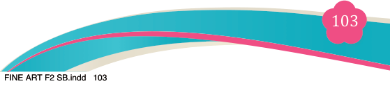
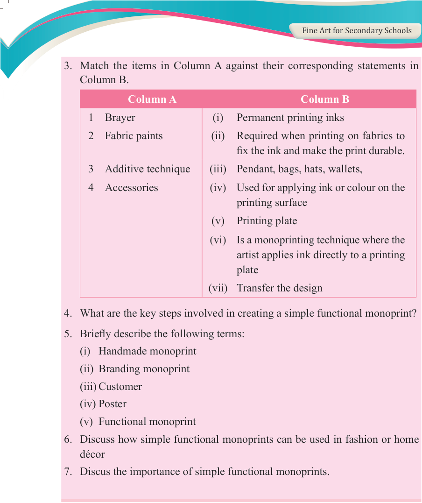

Fine Art for Secondary Schools

103

Student’s Book Form Two

3. Match the items in Column A against their corresponding statements in
Column B.
Column A
Column B
1
Brayer
(i)
Permanent printing inks
2
Fabric paints
(ii)
Required when printing on fabrics to
fix the ink and make the print durable.
3
Additive technique
(iii)
Pendant, bags, hats, wallets,
4
Accessories
(iv)
Used for applying ink or colour on the
printing surface
(v)
Printing plate
(vi)
Is a monoprinting technique where the
artist applies ink directly to a printing plate
(vii) Transfer the design
4. What are the key steps involved in creating a simple functional monoprint?
5. Briefly describe the following terms:
(i) Handmade monoprint
(ii) Branding monoprint
(iii) Customer
(iv) Poster
(v) Functional monoprint
6. Discuss how simple functional monoprints can be used in fashion or home décor
7. Discus the importance of simple functional monoprints.
04/08/2025 13:54